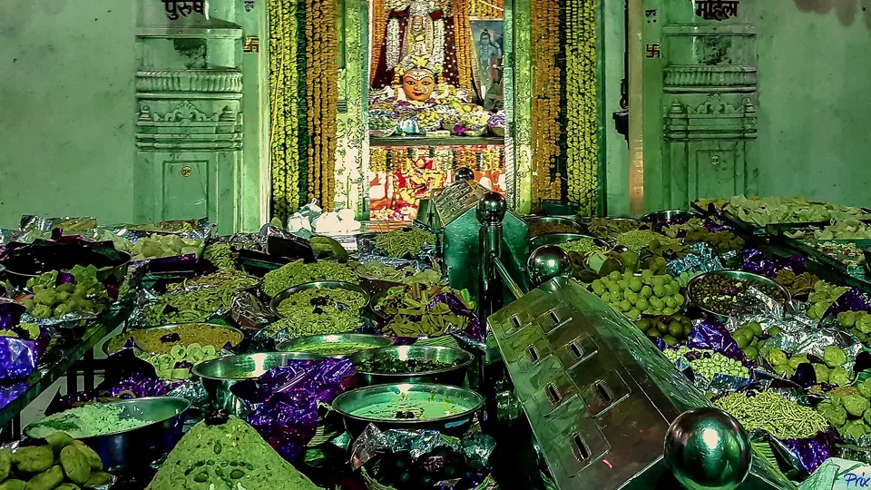
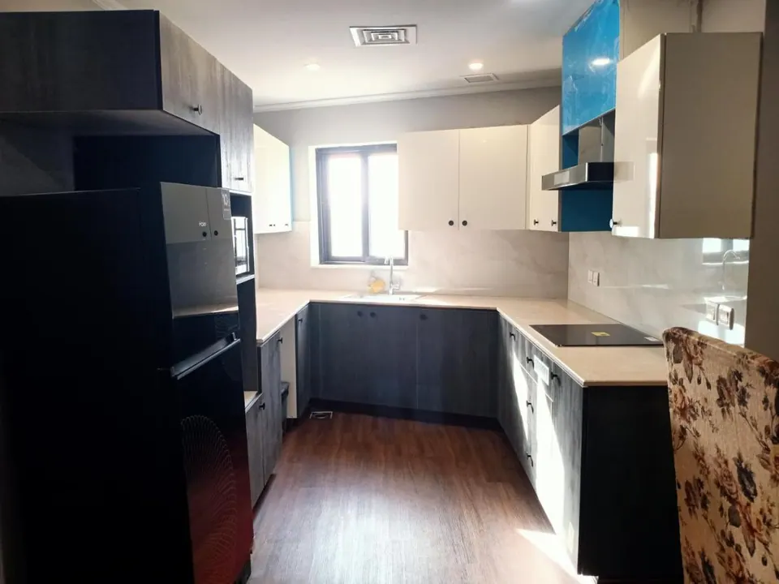

Ujjain Stay with a Kitchen: Cook Satvik Food on Pilgrimage

Yes, you can stay in Ujjain with a kitchen, and many pilgrim families prefer it. A stay with its own kitchen lets you cook satvik meals, make early-morning chai before darshan and feed children and elders on their own schedule. All five AP Villas properties include a full modular kitchen with a microwave and cookware.
We have hosted many families who arrive with a small bag of atta, ghee and spices from home. Their reason is simple: on a pilgrimage, food is part of the devotion, and cooking it yourself keeps it the way your family eats it. Here is how to plan for it, with honesty about what is easy in Ujjain and what needs a little thought.
Why pilgrim families choose a stay with a kitchen
A hotel room gives you a bed and a restaurant menu. A pilgrimage, though, runs on its own clock: a 3:30 AM start for Bhasma Aarti, a fast on Monday or Ekadashi, a grandfather who eats only at fixed hours, a toddler who needs warm khichdi at 9 PM. A kitchen turns each of these from a problem into a small routine.
Satvik and fasting food
Many families keep to satvik food during a yatra: no onion or garlic, little spice, freshly cooked. Others observe a vrat with sabudana, kuttu or fruit. Restaurants try to oblige, but you cannot always be sure how a dish was prepared. In your own kitchen you are.
Elders, children and special diets
Diabetic parents, a baby on soft food, a relative who avoids oil: a kitchen makes these needs ordinary. If you are travelling with elders, our guide to Mahakaleshwar darshan timings will help you plan the day around their energy, and the kitchen helps you plan the meals.
Odd hours
After the early aarti you return hungry and tired at 6 or 7 AM. After a late evening on the ghats you may want something light at 10 PM. A kettle, an induction cooktop and a mini fridge cover both without leaving the villa.
What a kitchen means at AP Villas
Every villa has a full kitchen or a kitchenette with all cooking equipment, an induction cooktop, a microwave and a mini fridge. A kettle is also provided, and breakfast is complimentary, so your first meal of the day is taken care of if you wish.

If you would rather not cook every meal, a local cook can be arranged for simple home-style thalis on request. Many families do a mix: they cook breakfast and light dinners themselves and ask for a thali on the busiest darshan day. Please message us before you arrive so we can arrange it.
What to carry from home, and what to buy in Ujjain
Plan on a short list and you will not feel overloaded. We suggest carrying only what is specific to your family:
- Your own spices, ghee, tea and any special flours (kuttu, singhara, rajgira) for fasting days.
- Baby food, dietary medicines or anything your doctor has advised for elders.
- A few small containers for carrying prasad and leftovers.
Fresh vegetables, milk, fruit and basic groceries can be bought nearby once you arrive. Ask the caretaker on arrival which shops are closest to your villa.
Do not overpack
You are in a city that has fed pilgrims for centuries. Carry the things that make your meals yours, and buy the rest.
When you want to eat out: local food in Ujjain
Even families who cook will want to taste the city. The district administration's page on local food lists poha, kachori, jalebi, sev, aalu bada, gulab jamun and dal bafla among Ujjain's well-known dishes (ujjain.nic.in). Poha with jalebi is the classic morning treat, and dal bafla, baked dough balls served with dal, is the dish most visitors are told to try.
Local food guides also describe Ujjain as largely vegetarian, particularly around the temples (Ujjain Darshan), so you will rarely have to look hard for a meat-free option. If you follow a strict satvik diet, ask each place about onion and garlic before you order.
Our own dining page shows what we can arrange for you, and we are happy to point you to simple, clean places near the temple.
Prasad: bring the blessing home
After darshan, most families buy prasad. The Mahakal temple sells besan laddu, and a report from October 2025 gives the price as Rs 400 per kg, sold on a no-profit, no-loss basis, with a ragi laddu added from Diwali 2025 (ETV Bharat). Prices and arrangements can change, so please check with the temple committee.
A mini fridge and a clean kitchen make it easy to keep and share prasad with the family, and to pack some neatly for relatives at home. It is a small thing, but it is part of why a villa feels different from a room.
A simple day with a kitchen: sample plan
- Before dawn: chai from the kettle or cooktop, a light bite, then the shuttle to the temple. For the 4 AM Bhasma Aarti, our shuttle drops guests at the temple gate by 3:30 AM.
- After darshan: return to the villa, and enjoy the complimentary breakfast or cook something warm like upma or khichdi.
- Afternoon: rest. This matters for elders and children. See our travel page for sightseeing options.
- Evening: a visit to the ghats or a second darshan, then a home-style dinner, either cooked by you or by a cook we arrange.
For more ideas on where to base yourself, our article on where to stay for Mahakal darshan compares the choices in plain terms.
Where to stay near Mahakal if you want to cook
All five AP Villas are within 2 km of Mahakaleshwar Jyotirlinga, and in-house guests get a complimentary Mahakal shuttle (up to 5 guests per trip). Every one has a full kitchen setup, so you can choose by group size.
Rudrangan Suites: our newest villa

Rudrangan Suites opened in 2026 with designer finishes and garden seating. It has three bedrooms and sleeps 6, so it suits a family of three generations who like to cook and eat together. It has a lift, is wheelchair friendly, and pets are welcome. It starts from Rs 5,200 per night. Check-in is at 10:30 AM and check-out at 9:30 AM, with a later check-out possible on request, subject to availability.
For other group sizes:
- Divinestay: three bedrooms, sleeps 8, with a private rooftop. From Rs 5,500 per night.
- Villa Aranya: three bedrooms, sleeps 8, with architect-designed interiors. From Rs 5,800 per night.
- Om Shanti Stay: two bedrooms, sleeps 6, good for families with children. From Rs 4,500 per night.
On arrival evening, our caretaker explains the Bhasma Aarti booking process, online or at the counter. The help is complimentary, but the temple permit itself is booked by the guest. See all our villas, or visit the contact page for questions.
Frequently asked questions
Can we cook our own food during a stay in Ujjain?
Yes, if your stay has a kitchen. Every AP Villas property has a full kitchen or kitchenette with an induction cooktop, microwave, mini fridge and cookware, so families can prepare their own meals. A local cook can also be arranged for simple home-style thalis on request.
Is a kitchen useful on a short two-day Mahakal darshan trip?
Often, yes. Even a short trip has early mornings, fasting days and children or elders who eat at different times. A kitchen lets you make chai, khichdi or a light meal at any hour without searching for an open restaurant, and the complimentary breakfast covers the first meal.
Is Ujjain easy for vegetarian and satvik eating?
Largely, yes. Ujjain is widely described as a vegetarian-friendly city, especially around its temples, and its local food such as poha, kachori, jalebi and dal bafla is vegetarian. Strict satvik or no-onion-garlic eating still needs a little planning, which is where cooking at your stay helps.
Can I buy Mahakal laddu prasad and bring it to my villa?
The temple sells besan laddu prasad at its counters, and a 2025 report put the price at Rs 400 per kg. Prices and counter arrangements can change, so please check with the temple committee. Prasad is easy to carry back to your stay and share with the family.
Which AP Villas stay has the most room for a family that cooks together?
Divinestay and Villa Aranya each have three bedrooms and sleep up to 8, so they suit larger families. Rudrangan Suites has three bedrooms and sleeps 6. All five villas include a full kitchen setup, so the better choice usually depends on your group size. WhatsApp us for current availability.
Sources
- Ujjain District Administration: Culinary delights
- Ujjain Darshan: What to eat in Ujjain
- ETV Bharat: Ragi laddu to be offered as prasad at Mahakal temple this Diwali
Timings, prices and dates change, especially on festival days. Please verify before you travel with the official temple or government site.
Whether you cook every meal or only a cup of chai, we hope your stay feels like your own home in Ujjain. Tell us your group size and dates, and we will suggest the right villa.
— Apoorv, Founder, AP Villas & Resorts